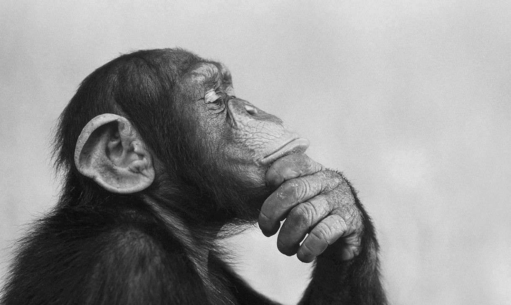

Эдмон родился в 1898 году на острове Борнео в диких джунглях.
В возрасте примерно трёх лет он был пойман местными охотниками и продан европейским торговцам экзотическими животными.
В 1902 году Эдмона приобрёл Гамбургский зоопарк, где он провёл всю свою оставшуюся жизнь.
С первых дней в неволе смотрители заметили, что Эдмон ведёт себя необычно для орангутанга.
Он не просто повторял действия людей — он понимал их смысл.
Эдмон научился открывать замки, наблюдая за ключником, собирал пирамидки из кубиков,
подражая смотрителю, и даже пытался рисовать палкой на песке.
В 1910 году к изучению Эдмона подключились антропологи из Берлинского университета.
Они проводили с ним эксперименты по использованию орудий, решению логических задач и распознаванию эмоций на лицах людей.
Результаты поразили научный мир: Эдмон различал грустное и весёлое выражение лица,
выбирал нужный инструмент из нескольких предложенных и отказывался выполнять задания,
если его обманывали.
В 1914 году, с началом Первой мировой войны, зоопарк закрылся, но Эдмона продолжали кормить и ухаживать за ним двое преданных смотрителей.
В этот период он сильно привязался к одному из них — Гансу Мюллеру.
После гибели Мюллера на фронте в 1916 году Эдмон впал в глубокую депрессию:
отказывался от еды, сидел неподвижно часами и издавал печальные звуки.
Это стало одним из первых задокументированных свидетельств сложной эмоциональной жизни приматов.
Эдмон умер в 1924 году в возрасте 26 лет от пневмонии. Его тело было передано в Берлинский музей естествознания, где скелет Эдмона хранится до сих пор. Чучело же было утрачено во время Второй мировой войны при бомбардировке.
Сохранились дневники смотрителя Гамбургского зоопарка Карла Вебера, который ухаживал за Эдмоном с 1905 по 1914 год.
Вот несколько записей:
«12 марта 1908. Эдмон сегодня украл ключи у уборщика.
Я нашёл его сидящим у клетки с самкой орангутанга — он пытался открыть замок.
Неужели он понял, что ключ нужен именно для этого?»
«23 июня 1910. Я показал Эдмону зеркало.
Сначала он испугался, но потом начал строить рожицы.
А затем — самое невероятное — он взял соломинку и попытался почистить зубы, глядя на своё отражение.
Откуда орангутанг знает, что люди чистят зубы?»
«2 сентября 1912. Сегодня Эдмон разбил миску с водой.
Когда я пришёл ругаться, он смотрел на меня такими виноватыми глазами, что я не смог сердиться.
Он протянул руку через прутья и погладил меня по плечу. Я поклялся,
что это был осознанный жест извинения.»